Ремонт мониторов и блоков джойстиков сельхозтехники — комбайнов и тракторов — в Алматы. Цена — от 120 000 ₸.
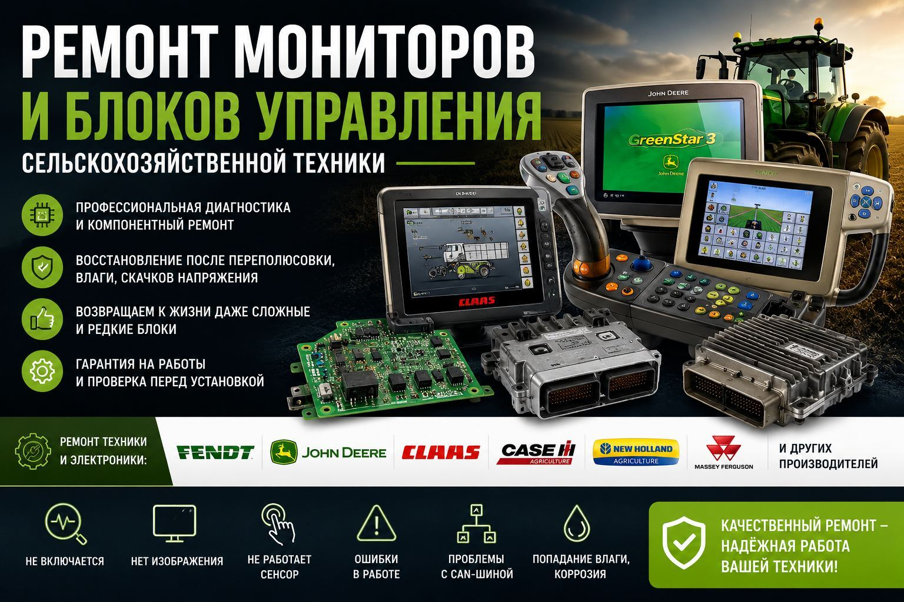
🔧 Проверьте и попробуйте решить сами — приложение «АвтоЭлектрик PRO» →
Виды ремонта
Диагностика и ремонт мониторов и дисплеев сельхозтехники. Работаем с неисправностями любой сложности.

Диагностика и ремонт мониторов
Выполняем диагностику и ремонт мониторов сельскохозяйственной техники различных производителей. Устраняем неисправности, такие как отсутствие включения, отсутствие изображения на экране, белый или чёрный экран.

Ремонт дисплеев
Осуществляем ремонт дисплеев сельскохозяйственной техники. Устраняем повреждения, такие как неисправности сенсорной панели, зависание монитора при загрузке, повреждение дорожек или электронных компонентов.

Ремонт электронных блоков управления
Выполняем ремонт электронных блоков управления. Устраняем ошибки связи по CAN-шине, самопроизвольную перезагрузку оборудования, а также другие неисправности.
Ремонт техники Fendt
Ремонт дисплеев, терминалов и консолей Fendt, включая G530.811.460.153, G530.811.460.154; а также блока управления Fendt A218 и электронных модулей RABE.
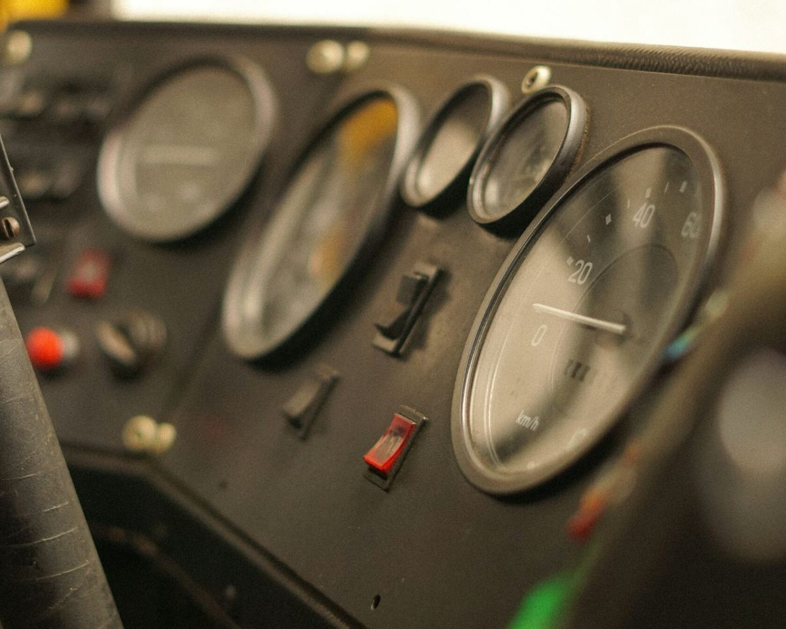
Ремонт консолей fendt
G411.971.070.013, G411.971.070.019, G411.971.070.031, G716.970.070.020, G718.970.071.012, G718.970.071.022, G718.970.071.024, G916.971.070.014, G916.971.070.015, G916.971.070.016, G916.971.070.022, G916.971.070.023, G916.971.070.026 цифровых дисплеев Panel RE64583 и RE217828 для техники John Deere 8400, 8410, 8420 и 8430.
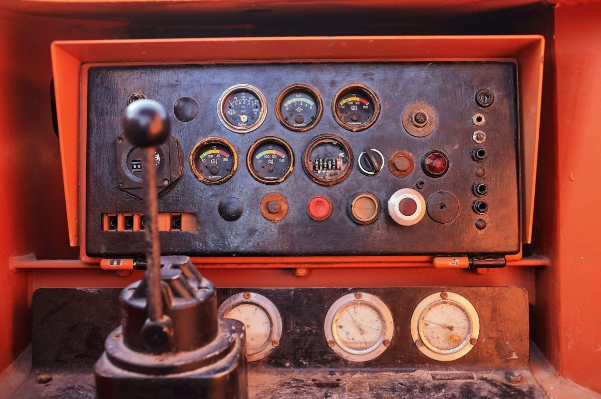
Ремонт блока управления fendt
RE531808 RE522515 F065193 RE522529 RE518503 AT346252 FLC2 RE528702
RE520953 RE543662
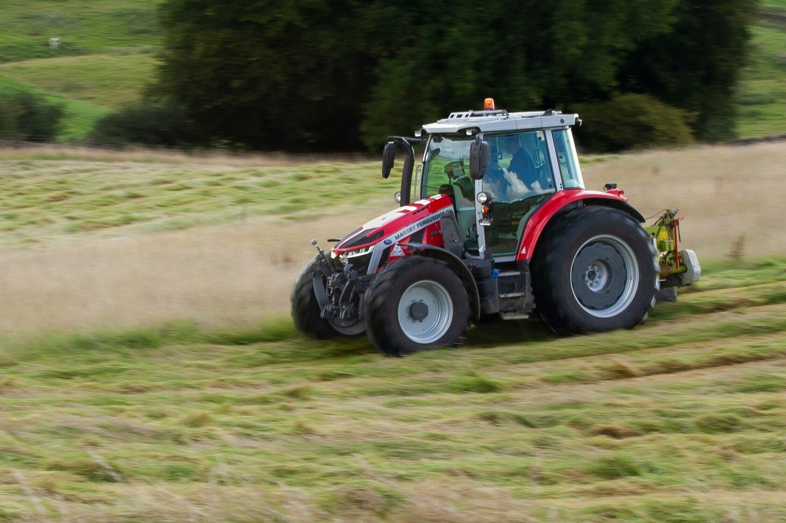
Ремонт электронных модулей rabe
Ремонт электронных модулей сельскохозяйственного оборудования RABE. Green Star 1800 Green Star 2630
Green Star 4240 Green Star 4640
процессорного блока Command Center 4200;
контроллера управления жаткой DD1550;
Ремонт John Deere
Ремонт электронных систем тракторов и комбайнов John Deere: трансмиссия, гидравлика, двигатель, топливная система; диагностика мониторов и дисплеев Green Star.
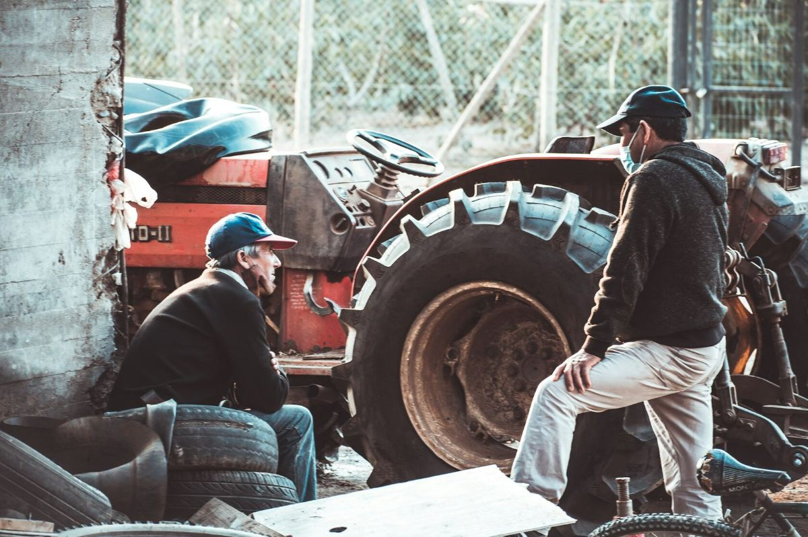
Ремонт платы управления трансмиссией
Ремонт платы управления трансмиссией RE219053 для трактора John Deere 8430.
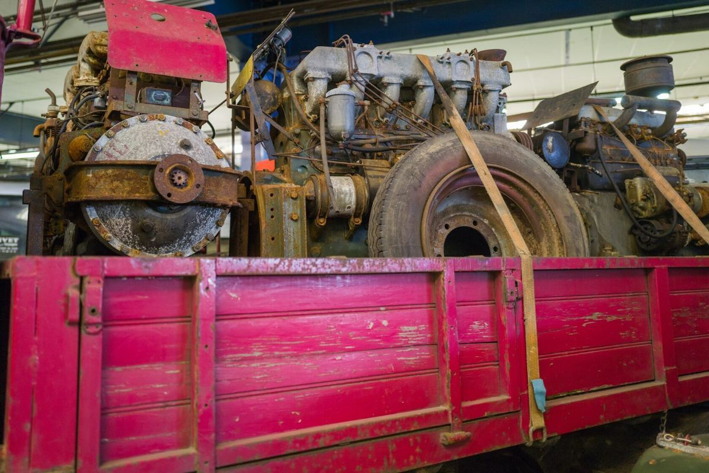
Ремонт модулей управления гидравликой
Восстановление модулей управления гидравликой RE567656.
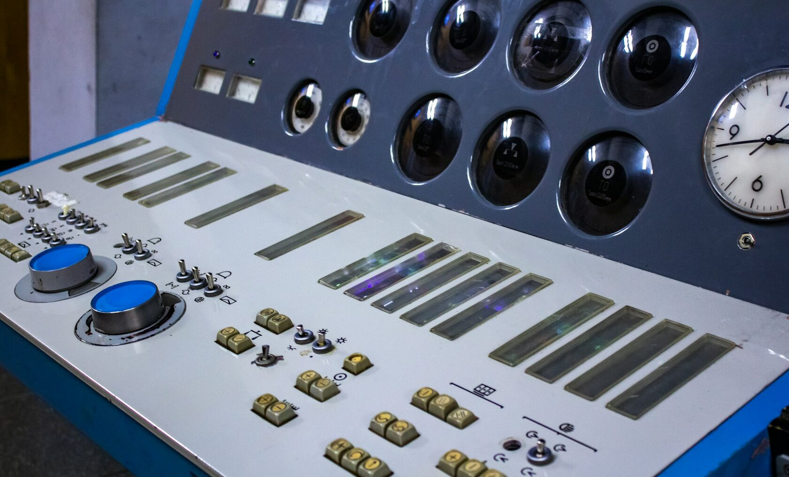
Ремонт блоков управления двигателя
Восстановление блоков управления двигателя и системы Common Rail.
Ремонт других производителей
Ремонтируем электронику и дисплеи: мониторы тракторов Massey Ferguson, GOT1000, GT1275-VNBA, Lemken CCI200 и др.
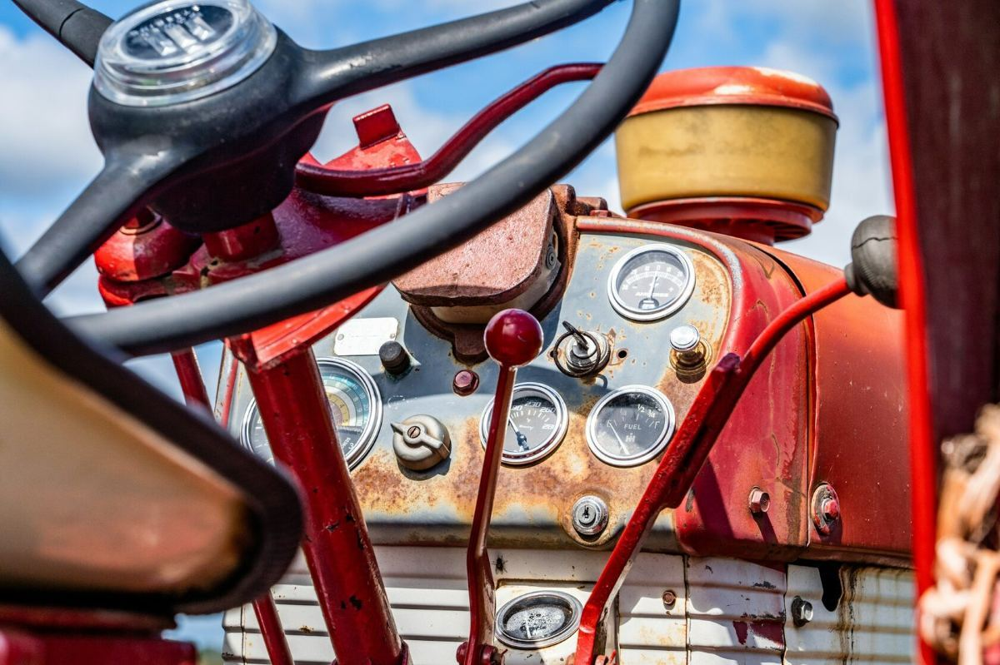
Мониторы тракторов Massey Ferguson
Ремонт электронных модулей и дисплеев для мониторов тракторов Massey Ferguson.
Мониторы линии упаковки семян GOT1000 и GT1275-VNBA
Ремонт электронных модулей и дисплеев для мониторов линии упаковки семян GOT1000 и GT1275-VNBA.
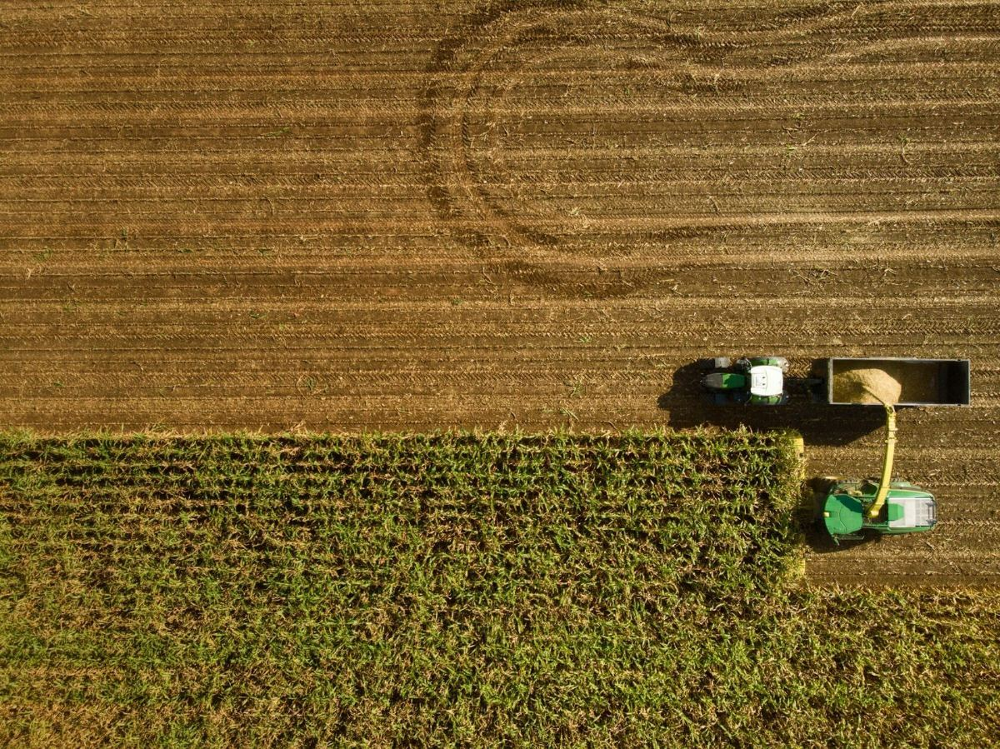
Мониторы Lemken CCI200 (57310538)
Ремонт электронных модулей и дисплеев для мониторов Lemken CCI200 (57310538).
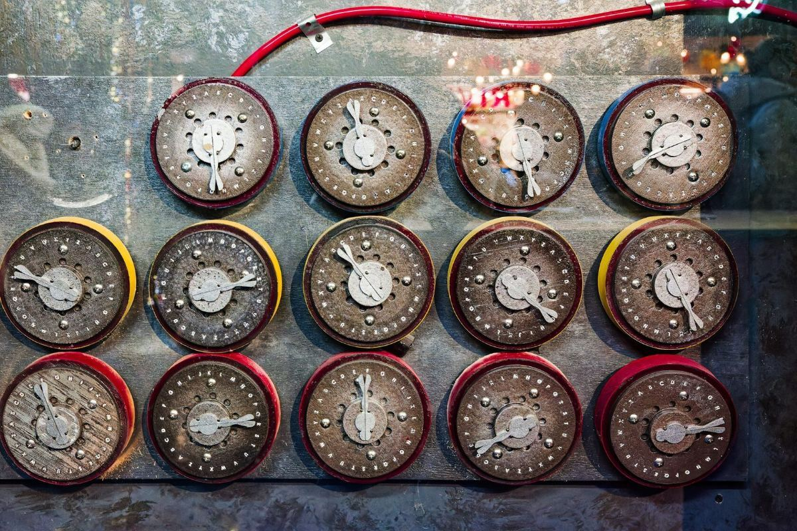
Индикаторы весов
Bourgault M2000A
Ремонт индикаторов весов Bourgault M2000A.
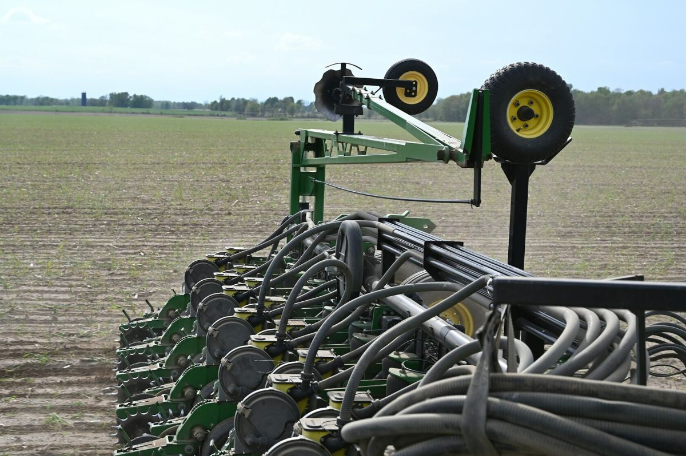
Мониторы комбайнов CASE
Ремонт электронных модулей и дисплеев для мониторов комбайнов CASE.
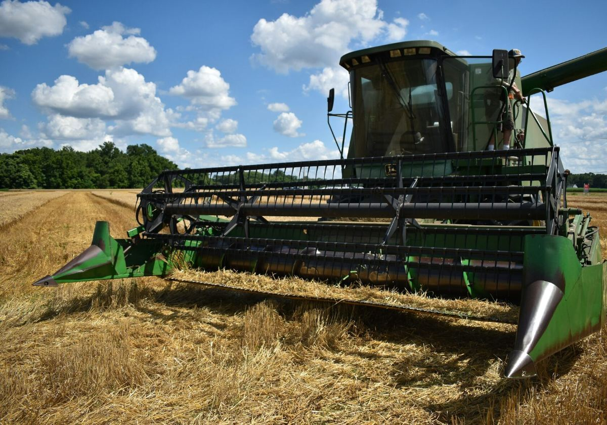
Бортовые компьютеры комбайнов CLAAS
Ремонт бортовых компьютеров комбайнов CLAAS.
Компонентный ремонт
Ремонт электронных плат, диагностика, восстановление после переполюсовки, скачков напряжения, влаги и коррозии. Проверка работоспособности после ремонта, опыт с сельхозтехникой.
Компонентный ремонт электронных плат
Профессиональное восстановление электронных компонентов для продления срока службы оборудования.
Профессиональная диагностика оборудования
Точная диагностика неисправностей для быстрого и эффективного устранения проблем.
Восстановление после переполюсовки и скачков напряжения
Устранение последствий переполюсовки и скачков напряжения для предотвращения повреждений.
Ремонт после попадания влаги и коррозии
Эффективное восстановление оборудования после воздействия влаги и коррозии.
Проверка работоспособности после ремонта
Детальная проверка оборудования после ремонта для обеспечения его надёжной работы.
Большой опыт работы с сельскохозяйственной техникой
Глубокие знания особенностей ремонта сельскохозяйственной техники для качественного обслуживания.
Связанные услуги
- Отключение AdBlue мочевины на сельхозтехнике — удаление SCR системы
- Комбайн Fendt 2023 не набирает обороты — ошибка SPN 520359 FMI 31, ремонт проводки
- Ремонт ЭБУ трактора – диагностика и восстановление электронных блоков управления
- Компьютерная диагностика комбайнов — точное выявление неисправностей электроники
КОНТАКТЫ ОЛЕГА
📞 Телефон: +7 701 121 11 10
🟢 WhatsApp: +7 701 121 11 10
📍 Адрес: ул. Мартынова, 39, Алматы
🗺 Проложить маршрут
⏰ Круглосуточно, без выходных
🧾 Документы и чеки, работаю на сервисе, выезжаю к клиентам на место, на дом или в офис по Алматы и области.
💬 Консультирую по телефону, помогу определить неисправность даже до выезда.
⚙️ Стаж более 26 лет. Занимаюсь профессионально ремонтом авто, выполняю сложный ремонт блоков.